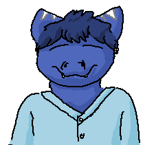
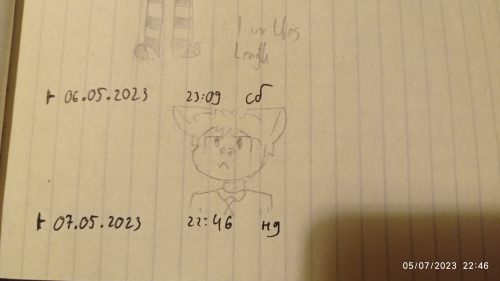
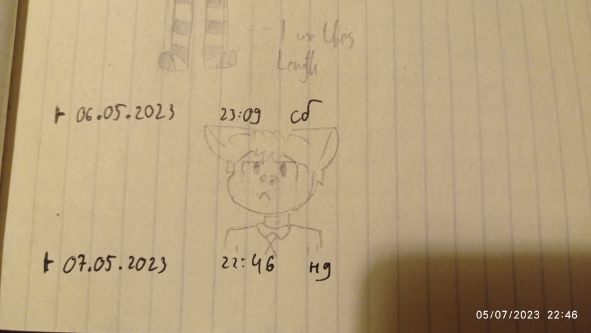

Thomas
Profile:Biological class: Dragon & Tiger Shark
Age: 20
Sex: Male
Intedefication in community:
Traits: Sensible (in his tasks), Luxurious (when has a lot of money), Sensitive (when someone cheering him)
Date of created: 25.02.2023(16.01.17M)
Country where born: Fur
Parents:
Mother: Laura
Father: Filip
Intrestings: politician, programmer, circuit engineer, viewer of anime
Work: Politician
Thomas was born in one city in Fur. His father, Filip was rode a lot to </>, so his mother, Laura, dealed with him. Thomas visited a lot of outschool activities, but not too active, like basketball. He visited to the mathematic group, of logic, electric engineering and lately, to the programmer group. Thomas loved it, he even created a sign with LED only for school market.
He me with a young Jania and first he liked her bravity and he brought a candy for her. She was pleasent to Thomas and Jania said "You can be better with your star!". After the words, Thomas started to be sensitive after the words. He started to hug her, said thanks and left Jania. Thomas - "Jania is patient to walk to almost adult me".
Lately, he was reattached to lyceum of programmer in </>, so, Thomas can see his father, when he's arriving to house. After this, he started to live himself. He listenned from students, what they're watching anime like "Fokushi's time" or "The great adventure of Gokuro". Thomas started to connecting for download those anime to his memory bank and watched it by retranslator. He was impressed and sensitive after that. Every time, mostly after work, he's watching anime. Thomas - "It has own world and their branches of plot and fanwork".
Thomas lately got to the university in </>, and it was difficulty, but thankfully, what pays for his success. He dreamed about getting romantic experiences and getting girlfriend. Thomas staying in romantic applications, but he had never fell in love in all quests. One of them, was Stasy. She liked him and they're started chatting, but lately sudently he disapeared from chat. He was uniterested. Stasy - "Thomas was a fine candidate of relationship for me, he's sensitive. But I can't explain, why he disappear from me? Maybe he's too nerdy".
Thomas's working as programmer, because his father, Filip had learned for him basics of programming and recommended to read books about computer. He lately started to read more books about that, but lately his motivation falls down and stopped to learning. One time, Thomas downloaded the anime "Hakuri's data-center". After watching, he accumulate his motivation to programming. Thomas started to earn a lot when he had hired to the work. He started to feel luxurious and started to buying more subscriptions and buying more richly food.
Thomas heard a noise but he didn't pay attention. Later, a mobilization letter came in his mailbox, so he must to go to military commissariat of </>. After training of be pilot of a floating fighter Ac1452-17, commanders of </> started a new campaign. Thomas was in a first mission, and it was cut off a supply line of Lib. It was pretty easy to cut off. First mission was acomplished, and after that, second mission was comming, and it was diversion. Thomas was exhausted after long fight against cruisers of Lib, and that was a mistake. His float fighter was damaged after beam of laser from defendive squad of float fighters Lib. Thomas - "Tension was in my blood, and I musted to attack the ememy". His attacks was succed, and destroyed two float fighters of Lib, but it costs 4 wounds for Thomas. He was hospitalised. Later, he decided to rest after that.
After his rest, the 4th Mind war was ended. He is under stress. His sensitive trait was erased.
Even after a while, Thomas didn't return his sensitive trait. He got, not need emotions for further living, because if the bad time came, it would cause wounds like in him. So he wants to change the world and make it more safe. Thomas started to read some books about accepting his ideas to the public. He decided to join a rebellion against Fur. Thomas started to distribute his ideas to some people. His idea became so popular that they went to the government without any resistance.
One time, Thomas, as a member of the dominant political party in Fur decided to change the profile. After the voting in parliament, it was accepted. The tests were with Thomas. After a few cycles, the new profile style was created. The next cycle, Thomas reported about the success of the creation. They decided to make the global rewriting profiles. So, Thomas was responsible for a messaging campaign to rewrite in the better system.
One time, Thomas was hearing about preporation to the war against Art, but he deciding to capture a region by rebellion. Thomas felt anxious, but then reassuringly said - "It's worth it". After that, he made presentation for supporting his campaign. The campaign presentation was incredible, so it was suppoted by Ministery of Fur.
He got a mail about discovering a new piece of territories, but all of that occupied Life and their allies. Also, the mail contain an updated politician map of Mind and a letter to join to the one of two aliances in next Mind crisis. Thomas was confused. Thomas - "A new Mind war? Already? Maybe that's an opportunity to capture more regions" When Thomas saw the map, it don't contain a division by regions. In backward of the map saw a note - "Division by regions was erased because DB was broked down by Life"
Gallery:


 [like in Family Guy, but it wasn't excepted]

[like in Family Guy, but it wasn't excepted]
